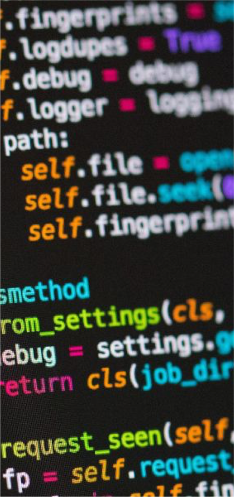
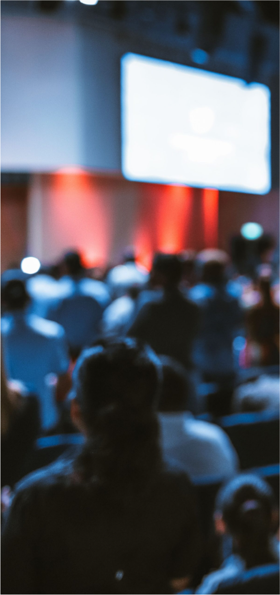

01
a propos
Eikonica vous propose une plongée au sein du monde des art
numérique, invitant votre curiosité à s’imprégner de cet univers
aux frontières nouvelles ayant pour nom « technologies ». Du 13
au 15 octobres, vous êtes ainsi convié à découvrir les
composants et acteurs de ce milieu, à découvrir des perceptions
nouvelles qui vous ouvrirons un horizon nouveau. Des artistes
locaux et internationaux seront les guides de vos découvertes au
travers de conférences et atelier mais aussi de concerts
exclusif…


02
programme
13 octobre
11h : Conférence inaugurale sur les tendances actuelles de
l'art numérique - studio Vidéo
14h : Atelier "Initiation à la réalité virtuelle" pour les retraités (sur inscription) - salle 102
16h : Atelier "Pixel Art" pour les enfants (7 à 12 ans, sur inscription) - salle 103
18h : Vernissage des expositions – Korridor
20h : Concert d'ouverture avec l’artiste fribourgeois Kinetic Flow – Fri-son
14 octobre
14h : Atelier "Initiation à la réalité virtuelle" pour les retraités (sur inscription) - salle 102
16h : Atelier "Pixel Art" pour les enfants (7 à 12 ans, sur inscription) - salle 103
18h : Vernissage des expositions – Korridor
20h : Concert d'ouverture avec l’artiste fribourgeois Kinetic Flow – Fri-son
11h : Conférence sur la place de l'art numérique dans les
industries créatives - studio Vidéo
14h : Atelier "Création d'un GIF animé" pour les enfants (sur inscription) - salle 103
16h : Atelier "Création d'une œuvre interactive" (sur inscription) - salle 102
18h : Projection en avant-première du film d'animation “Le rêve de Luna” - studio Vidéo
20h : Concert avec le groupe belge Neon Pulse – Fri-son
15 octobre
14h : Atelier "Création d'un GIF animé" pour les enfants (sur inscription) - salle 103
16h : Atelier "Création d'une œuvre interactive" (sur inscription) - salle 102
18h : Projection en avant-première du film d'animation “Le rêve de Luna” - studio Vidéo
20h : Concert avec le groupe belge Neon Pulse – Fri-son
11h : Conférence sur l'avenir de l'art numérique et ses
implications sociales – studio Vidéo
14h : Atelier "Fabrication de circuits électroniques" pour les retraités (sur inscription) - salle 103
16h : Atelier "Introduction à la programmation" pour les enfants (sur inscription) - salle 102
17h : Clôture du festival avec performance artistique de l’artiste Min-Jae Park – salle 403
14h : Atelier "Fabrication de circuits électroniques" pour les retraités (sur inscription) - salle 103
16h : Atelier "Introduction à la programmation" pour les enfants (sur inscription) - salle 102
17h : Clôture du festival avec performance artistique de l’artiste Min-Jae Park – salle 403
03
exposition
Les expositions proposées n’ont pas seulement pour but de vous
instruire ou nourrir visuellement, mais de vous faire
expérimenter une nouvelle façon de traverser une présentation
visuelle grâce aux technologies novatrices qu’ils nous tient à
cœur de vous faire découvrir.

04
evenement


tickets & reservations
En raison du nombre limité de place,
il vous est conseillé de réserver votre évenement.
il vous est conseillé de réserver votre évenement.
05
infos
-
transports, conférences, workshop
Route Wilhelm Kaiser 13, 1700 Fribourg -
concert
Route de la Fonderie 13, 1700 Fribourg -
transports
bus: 1,3,7,8,9 (arrêt charmettes)